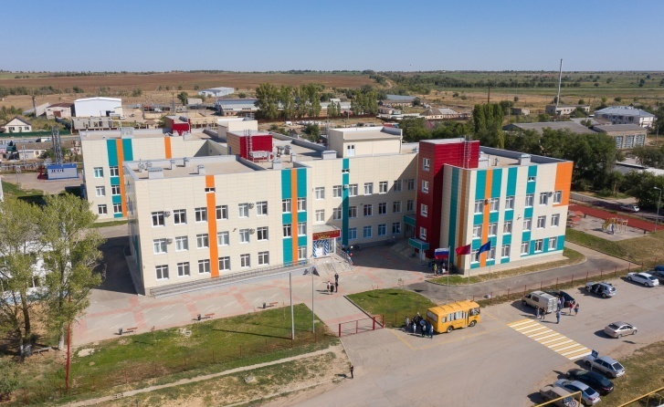
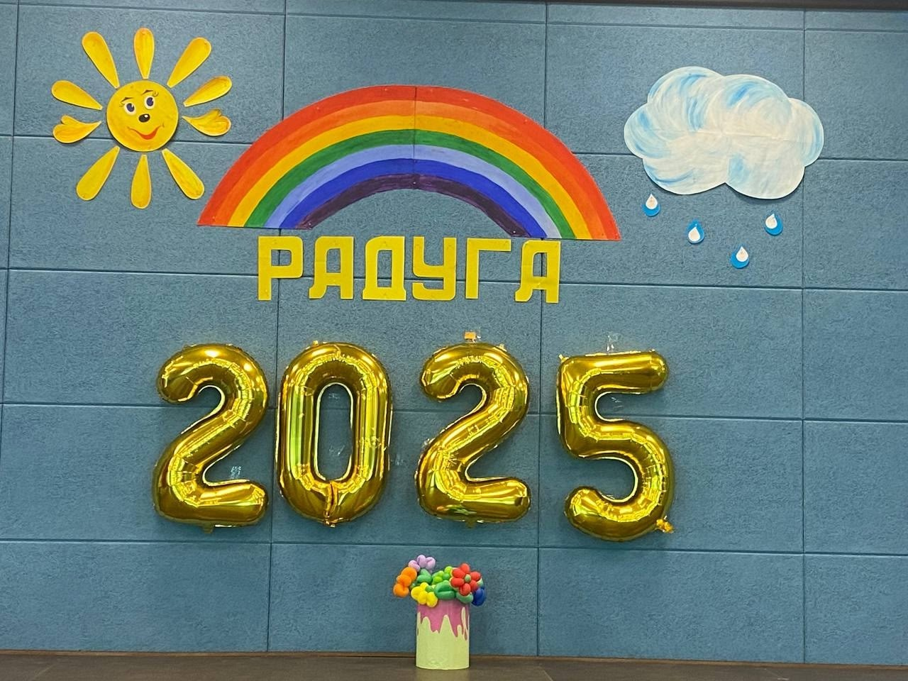

Наша миссия

Для учителей школа — это не просто работа, это - целый мир, в котором они живут. Каждый учитель в нашей школе понимает стоящие перед ним цели и задачи: подготовить детей к жизни в современном открытом информационном обществе, научить их учиться, воспитать граждан великой страны и просто хороших людей, ценящих дружбу, умеющих заботиться о близких. Для этого надо не только давать отличные знания, но любить, понимать и уважать эту маленькую пока еще, но уже личность.
История и развитие

Благодаря бескорыстной и упорной работе педагогического коллектива на протяжении долгих лет школа поистине повзрослела и преобразилась. Бывшие ученики теперь приводят сюда своих детей, чтобы дать им достойное и современное образование.
Традиции

Из года в год многое меняется, но одно остается неизменным: школа по-прежнему существует только для детей и старается дать пространство благополучия, успеха и безопасности.
Наша школа – это большой, надежный, теплый дом, где есть работа и отдых, праздники и будни, а, самое главное, – добрые традиции. Сотрудничество педагогов, обучающихся и их родителей, основанное на взаимоуважении и взаимопомощи, является залогом успеха.